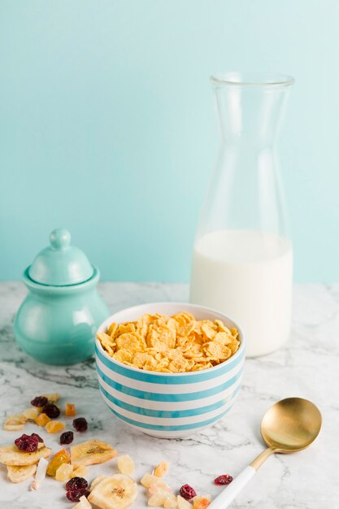
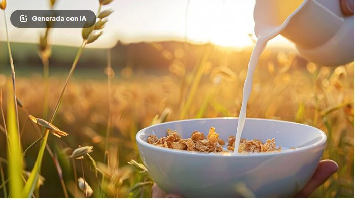
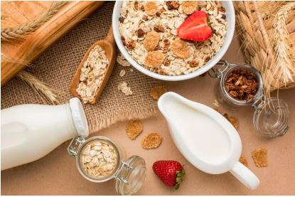

Misión: proporcionar productos lácteos y cereal de alta calidad.
Queremos aportar valores nutricionales a nuestros clientes y mantenernos en la vanguardia del mercado, donde tengamos relaciones duraderas, confiables con nuestros proveedores, empleados y consumidores, poder tener la confianza respeto y compromiso de nuestro consumidor final.

Visión: Ser lideres en el mercado de cereales y lácteos reconocidos por excelencia de calidad e innovación.
Queremos expandir nuestra presencia en mercados y segmentos, manteniendo nuestro compromiso y calidad en satisfacción de nuestros clientes, así lograr ser una empresa sostenible, respetuosa con el medio ambiente y comprometida con el bienestar de nuestras comunidades.

Características: productos de alta calidad, elaborados con ingredientes frescos y naturales.
Contar con una amplia variedad de productos lácteos como leche, yogurt, queso y cereales como avena maíz y trigo.
Tener innovación constante en nuestros productos y las necesidades de nuestros consumidores .
colaboración con proveedores locales y apoyo a la economía regional.
Certificaciones de alta calidad y seguridad alimentaria (ISO, HACCP, etc).
